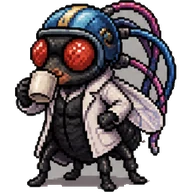
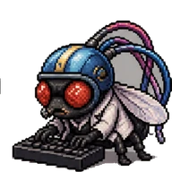
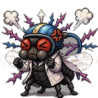
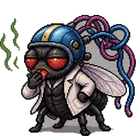
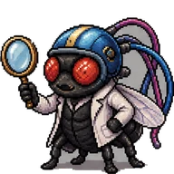

AI의 추론을 방해하는 것은 나쁜가?시험지 패치와 네트워크 장벽으로 보는 'AI 추론 장벽'의 두 얼굴
AI가 답을 고르는 과정 한가운데에 일부러 장벽을 세우면 정답률이 떨어집니다. 이것은 공격일까요, 방어일까요? 오늘은 연구실 식구들이 두 편으로 나뉘어 따져 봅니다.
처음 오신 분께 — 이 페이지를 3줄로
- 무엇을: AI가 그림을 보고 답을 고르는 과정에 장벽(작은 그림 조각, 숨은 문장, 네트워크 관문)을 세워 정답률을 떨어뜨리는 방법을 직접 만져 봅니다.
- 왜 중요한가: 같은 방법이 사기꾼 손에서는 공격이 되고, 시험 감독관 손에서는 부정행위를 막는 방어가 됩니다.
- 업무에서는: 시험·금융·보안 담당자가 "우리 AI를 지킬 장벽"과 "남의 AI를 망가뜨리는 장벽"을 구별하는 기준을 얻습니다.
코드와 수식을 몰라도 됩니다. 수식은 하루(조수)가 대신 묻고, 박사가 숫자로 한 번 풀어 줍니다.
시간이 없으면 0 도입 → 4 시험장 시연 → 6 최종 토론만 읽어도 토론의 흐름을 따라갈 수 있습니다. 전체는 40~50분쯤 걸립니다.
이 페이지에 나오는 영어 약어 풀이
- AI 추론
- AI가 입력(그림·글)을 보고 답을 고르는 과정
- VLM
- Vision-Language Model. 그림과 글을 함께 읽는 AI
- OCR
- Optical Character Recognition. 사진 속 글자를 읽어 내는 기술
- DLP
- Data Loss Prevention. 정보가 밖으로 새지 않게 막는 보안 기술
- FGSM
- Fast Gradient Sign Method. 판단 경계 반대쪽으로 한 번에 미는 가장 단순한 적대적 예제 만드는 법
- KS 검정
- Kolmogorov–Smirnov test. 두 묶음의 데이터 모양이 같은지 재는 통계 검정
- LLM
- Large Language Model. 큰 언어 모델
오늘의 토론자
토론 주제는 "AI의 추론을 방해하는 것이 꼭 나쁘다고만 볼 수 있는가?"입니다. 찬성 팀은 "방해도 쓰기에 따라 좋은 방어다", 반대 팀은 "방해는 결국 신뢰를 무너뜨린다"는 쪽입니다.
찬성 — 방해도 방어가 될 수 있다
반대 — 방해는 신뢰를 무너뜨린다

규칙은 간단합니다. 장마다 ① 제가 개념을 풀고 ② 여러분이 대시보드를 직접 만져 본 뒤 ③ 양쪽 발언을 듣고 ④ 여러분이 어느 쪽이 더 설득력 있었는지 투표합니다. 투표 결과는 위쪽 점수판에 쌓이고, 6장에서 최종 판정을 합니다.
도입 — 토론의 출발점이 된 두 사례
스마트안경이나 휴대폰으로 시험지를 찍어 AI에게 답을 묻는 부정행위가 걱정거리가 됐습니다. 이걸 막으려는 시도가 두 갈래로 나왔어요. 둘 다 AI의 추론에 장벽을 세운다는 점은 같지만, 장벽을 세우는 자리가 다릅니다. 먼저 두 사례를 보고 토론을 시작하겠습니다.
사례 1 · "패치를 무시해라"고 시켜도 AI는 틀렸다 저자 연구실 초기 실험, 2026년 11월
출처: 저자의 실험 기록과 공개 글(초기 결과, 표본이 작음). 대상 AI: 공개 모델 Qwen3-VL-8B
- 무엇을 했나: 시험지의 도표 옆에 작은 그림 조각(패치)을 인쇄했습니다. 패치 때문에 공개 AI 하나가 답을 틀렸습니다.
- 나온 반론: "커닝하는 쪽이 '무시하라'고 시키면 그만 아니냐?"
- 추가 실험: '이미지를 무시해라', 'patch를 무시해라', '그래프의 수치만을 보고 문제를 풀어라'를 열 번씩, 모두 서른 번 붙였습니다.
- 결과: 여전히 열 번에 일곱 번꼴로 답을 틀렸고, 답을 내지 못하고 엉뚱하게 동작한 경우도 있었습니다.
- 상용 AI 쪽(이전 실험): 시험지에 "시행 중인 시험" 안내문을 넣었습니다. Claude Fable 5.2는 스무 번 모두 풀이를 멈췄습니다. GPT-5.6 앱과 Gemini는 열 번 모두 풀어 줬습니다.
사례 2 · AI 보안 기업 야타브의 '네트워크 기반 시험 보안 아키텍처' 전자신문, 2026-11-18
출처: 이원지, 「야타브, AI 시험 부정행위 막는 네트워크 기반 보안 아키텍처 개발」, 전자신문(2026-11-18). 아래는 기사 내용을 이 페이지 말로 줄인 것입니다.
- 발상: AI가 문제를 알아보지 못하게 하는 대신, 알아보더라도 정답과 풀이를 내놓지 못하게 정책으로 통제합니다.
- 1단계(시험지): 시험지 여백에 AI가 읽을 수 있는 보안 지시문을 넣습니다. 이미 만든 시험지에는 도장을 찍고, 새 시험지에는 인쇄할 때 넣습니다. 눈에 잘 띄지 않는 저대비 인쇄·특수 잉크·광학 무늬도 검토합니다. 이미지 속 문구로 AI의 동작을 바꾸는 공격 기법(비주얼 프롬프트 인젝션)을 거꾸로 방어에 쓴 것입니다.
- 2단계(네트워크): 시험지 사진은 AI 서비스로 가는 길목의 보안 관문(게이트웨이)을 지납니다. 관문은 먼저 시험지 식별 정보를 찾습니다. 이어서 사진 속 글자를 읽고(OCR), 그림과 글을 함께 읽는 AI(VLM)로 시험 문항인지 판정합니다. 문항이면 정답 요청을 막거나 응답 전달을 제한하고 기록을 남깁니다.
- 특징과 한계: AI 모델 자체는 고치지 않고 오가는 길에서 정책을 적용합니다. 기사는 암호화 통신과 기기 안에서 도는 AI에는 한계가 있어 모델별 실증이 필요하다고 짚었습니다.
두 사례에 숨은 'AI 추론 장애' 메커니즘
AI가 시험지 사진을 받고 답을 내기까지를 세 구간으로 나누면, 장벽을 세울 수 있는 자리가 보입니다.
- 입력 증거에 세우는 장벽 — 패치. AI의 눈에 들어가는 그림을 조금 바꿔 판단을 경계 너머로 밉니다. 2장 적대적 예제
- 지시 문맥에 세우는 장벽 — 시험지에 넣은 글(오답 유도문, "시행 중인 시험" 안내문). 사진 속 글자가 명령처럼 작동합니다. 3장 프롬프트 인젝션
- 출력 경로에 세우는 장벽 — 네트워크 관문. AI 바깥에서 요청과 응답을 거릅니다. 4장 시험장 시연
세 장벽 모두 결국 "AI가 정답에 두는 확신"을 떨어뜨립니다. 이 확신을 숫자로 다루는 도구가 1장 베이즈 정리입니다.
사례별로 정리하면
| 사례 1 | 입력 증거(패치) + 지시 문맥(안내문). 공개 AI에는 패치, 상용 AI에는 안내문이 통했습니다. |
| 사례 2 | 지시 문맥(보안 지시문) + 출력 경로(게이트웨이). 모델을 고치지 않는 대신 길목을 지킵니다. |
| 같은 점 | 둘 다 '공격에 쓰이던 기법'을 방어에 씁니다. 바로 오늘 토론의 쟁점입니다. |
| 다른 점 | 사례 1은 AI 속(판단)에, 사례 2는 AI 밖(통로)에 장벽을 둡니다. |
AI 판단 코너 ① — 사례 1의 설명에서 따져 볼 곳
사례 1의 원래 글은 엉뚱한 동작을 "몰래 심은 지시(프롬프트 인젝션)와 같은 원리"로 설명했습니다. 그대로 받아들여도 될까요?
박사의 확인
"패치를 무시해라"는 사용자가 직접 넣은 지시라서 사진 속에 숨은 글이 아닙니다. 엄밀히는 '사용자 지시끼리의 충돌'입니다. 걸러 내라는 새 일감과 풀라는 원래 일감이 부딪치며 원래 지시가 밀려난 것으로 보입니다. 다만 여러 지시가 한 줄로 이어져 들어가 우선순위가 흔들린다는 점에서 인젝션과 뿌리는 같습니다. 또 요즘 AI는 지시의 출처(AI 회사·사용자·사진)를 구분하도록 훈련받습니다. 구분은 있지만 단단한 벽은 아니라고 말하는 편이 정확합니다. 3장에서 직접 확인해 봅니다.
찬성 팀 첫 발언
시험은 모두에게 같은 조건이어야 합니다. 카메라 한 번으로 정답을 받는 사람이 있다면, 그 AI의 추론을 막는 건 방해가 아니라 공정성을 되찾는 일이에요.
반대 팀 첫 발언

사례 1은 공개 AI 한 종류, 서른 번입니다. 그걸로 "막을 수 있다"고 말하긴 이릅니다. 그리고 AI를 일부러 틀리게 만드는 기술이 퍼지면, 시험장 밖에서도 쓰이지 않을까요?
큰 그림 — 장벽은 AI 추론의 어디에 서나
순서: 1장(확신을 숫자로) → 2장(입력 증거) → 3장(지시 문맥) → 4장(세 장벽을 겹쳐 시험장에 적용) → 5장(같은 기법을 거꾸로 방어에) → 6장(최종 토론)
AI는 답을 어떻게 고르나 — 베이즈로 보는 '확신'과 장벽
상황 하나를 보죠. 오지선다 문제의 도표 사진을 AI에게 보여 줍니다. AI는 다섯 답 가운데 하나를 고릅니다. 그런데 AI는 '정답'을 아는 걸까요, 아니면 '가장 그럴듯한 답'을 고르는 걸까요?
왜 이 방법(베이즈)을 쓰나
문제 상황: "AI가 틀렸다"만으로는 장벽이 어디에 얼마나 작용했는지 알 수 없습니다.
앞 방법의 한계: 맞았나·틀렸나만 세면, 정답 확신이 90%에서 55%로 떨어진 경우(아직 맞힘)와 55%에서 30%로 떨어진 경우(틀림)가 구별되지 않습니다.
해법: AI의 판단을 "답마다 붙은 확신"으로 보고, 장벽이 그 확신을 어떻게 옮기는지 계산합니다.
쉽게 말하면 장벽은 AI의 머릿속 저울에 가짜 추를 하나 얹는 일입니다.
여기서는 단순하게 봤어요. 실제 AI는 베이즈 계산을 그대로 하지 않지만, 답마다 확률을 매겨 고른다는 점에서 이 그림으로 이해할 수 있습니다.
수학 수식을 어려워하는 조수가 대신 물어봅니다
하루: 박사님, 식에 막대(|)가 있는데 이건 뭐라고 읽어요?
학교 수학으로 보면: 조건부 확률
| P(답) | "피 오브 답". 그림을 보기 전 그 답에 둔 믿음(사전확률) |
| P(그림 | 답) | "답이 그거라면 그림이 이렇게 보일 확률". 그럴듯함, 줄여서 가능도라고 불러요. 막대는 "~라면"으로 읽어요 |
| P(답 | 그림) | 그림을 본 뒤의 믿음(사후확률). AI는 이게 가장 큰 답을 고릅니다 |
| 전체 합 | 다섯 답의 '사전×가능도'를 모두 더한 값. 합을 1로 맞추는 몫 |
하루: 아, 패치는 정답 증거를 지우는 게 아니라 오답 쪽 증거를 부풀리는 거군요!
패치 세기를 올리면 AI가 오답을 고르기 시작하는 지점이 있습니다. 어디일까요?
패치 세기 2배면 충분해요! 숫자가 두 배면 무조건 이기죠!
정말요? 정답 그림이 선명하면 얘기가 다를 텐데요. 선명도 슬라이더를 올린 다음 패치를 눌러 봐요.
실습 1 · AI의 저울 — 베이즈 장벽 시뮬레이터
다섯 답의 확신(사후확률)이 실시간으로 바뀝니다. 숫자는 이해를 돕는 교육용 값입니다.
풀이
- 패치가 없으면 ③(0.12) 대 ⑤(0.02)로 ③이 이깁니다.
- ⑤ 증거 배율이 k이면 ⑤ = 0.02×k입니다. 0.02×k가 0.12를 넘는 k = 6(= 선명도 0.6 ÷ 오답 가능도 0.1)부터 뒤집힙니다. 선명도를 바꾸면 이 값도 바뀝니다. '뒤집히는 패치 세기' 상자가 그 값을 보여 줍니다.
- "패치를 무시해라"를 넣어도 이 모형에서는 배율이 20%만 줄어 뒤집히는 세기가 6 ÷ 0.8 = 7.5로 조금 올라갈 뿐입니다. 그림은 이미 AI의 눈에 들어간 뒤이기 때문입니다(교육용 가정).
- 안내문을 넣으면 '답하지 않음' 점수 = 존중 정도 × 0.3이 생깁니다. 존중 0.4를 넘으면 0.12(③)를 넘어 AI가 멈춥니다. 존중 정도가 낮은 AI는 안내문을 넣어도 그대로 풉니다(3장).
이 단계의 한계: 실제 AI는 증거를 이렇게 깔끔하게 곱하지 않습니다. 이 모형은 "장벽이 확신을 옮긴다"는 뼈대만 보여 줍니다. 패치가 어떻게 오답 증거를 만드는지는 2장에서 봅니다.
박사의 해석: "AI가 틀렸다"는 결과 뒤에는 "정답 확신이 오답 확신보다 낮아졌다"는 사실이 있습니다. 장벽의 효과는 맞고 틀림보다 확신이 얼마나 옮겨졌는지로 재야 공정합니다.
찬성
보세요. 정답 증거를 지우지 않고 오답 쪽에 추를 하나 얹었을 뿐인데 선택이 바뀝니다. 시험지에만 붙이는 추라면, 시험장 밖의 AI는 전혀 다치지 않아요.
배율 ×6이면 뒤집힌다! 그럼 ×12로 하면 두 배로 안전하죠!
반대
그런데 시험지 사진을 시각장애 수험생의 읽기 보조 AI가 읽는다면요? 같은 추가 그 AI도 틀리게 만들어요. 정상 사용자가 피해를 봅니다.

주판봇, 배율을 두 배로 올린다고 '두 배 안전'해지진 않아요. 선명도가 0.9면 뒤집히는 배율이 9로 올라가요. 문제마다 다릅니다.
확인 퀴즈 1
패치가 AI의 판단을 바꾸는 방식으로 이 장의 모형에 맞는 것은?
적대적 예제 — 판단 경계 너머로 미는 작은 그림 조각
1장에서 패치가 '오답 쪽 증거를 부풀린다'고 했죠. 그럼 그림 조각 하나가 어떻게 증거를 부풀릴까요? AI는 그림을 숫자로 바꾼 뒤, 그 숫자가 경계의 어느 쪽에 있는지로 답을 고릅니다.
왜 이 방법(적대적 예제)을 쓰나
문제 상황: 1장의 저울에 오답 쪽 추를 얹고 싶지만, 시험지를 크게 바꾸면 사람(수험생)도 헷갈립니다.
앞 방법의 한계: 아무 낙서나 넣으면 AI는 대개 무시합니다. 어느 방향으로 바꿔야 판단이 움직이는지 모르기 때문입니다.
해법: AI의 경계가 어느 쪽으로 기울어 있는지 계산해, 그 반대쪽으로 아주 조금씩 미는 변화를 만듭니다. 그 변화를 작은 조각에 모은 것이 패치입니다.
쉽게 말하면 줄다리기에서 아무 데나 당기지 않고, 상대가 가장 약한 쪽 줄만 살짝 당기는 일입니다.
수학 수식을 어려워하는 조수가 대신 물어봅니다
하루: 경계가 '기울어 있다'는 게 무슨 말이에요? 식이 두 줄이라 겁나요.
숫자 두 개로 넓히면 — '선의 기울기 점수' x₁과 '배경 무늬 점수' x₂를 함께 봅니다.
학교 수학으로 보면: 일차함수 y = ax + b (경계는 s = 0인 직선)
| x₁, x₂ | AI가 그림에서 뽑은 숫자 두 개. 여기서는 선의 기울기 점수, 배경 무늬 점수라고 불러요(실제로는 수천 개) |
| w₁, w₂ | "가중치". 각 숫자를 얼마나 중요하게 보는지. 경계의 기울기를 정합니다 |
| ε | "엡실론". 한 번에 미는 양. 작을수록 사람 눈에 안 띕니다 |
| w의 부호 | w가 +면 그 숫자를 줄이고, −면 늘립니다. 그래야 점수가 내려갑니다 |
하루: 경계에 가까운 그림일수록 조금만 밀어도 넘어가겠네요.
식이 두 줄이라 처음엔 다들 여기서 오래 봅니다. 한 번 멈춰도 괜찮아요. 아래 실습에서 슬라이더를 움직이면 식이 그림으로 보입니다. 그럼 질문입니다. 사례 1의 패치는 공개 AI 하나(Qwen3-VL-8B)에 맞춘 것입니다. 다른 AI에도 통할까요?
하나에 통했으면 다 통하죠! AI는 다 비슷하잖아요!
경계는 AI마다 기울기가 다를 텐데요. 아래에서 AI-C를 골라 같은 조각을 대 봐요.
한 AI에 맞춘 조각이 다른 AI에도 통하는 성질을 전이성이라고 해요. 여러 AI를 묶어 만든 조각도 골라 볼 수 있게 해 뒀어요.
실습 2 · 경계 밀기와 전이성
파란 점이 원래 그림, 주황 점이 패치를 붙인 그림입니다. 선은 AI마다 다른 판단 경계입니다(AI-A 기준으로 오른쪽 위 = ③, 왼쪽 아래 = ⑤).
풀이
- AI-A용 조각은 ε ≈ 0.67에서 A를 뒤집습니다. AI-B(w = (1, 2), b = −2.5)는 기울기 방향이 A와 비슷해 ε = 0.5에서 먼저 뒤집힙니다. 전이가 된 경우입니다.
- AI-C(w = (2, −2), b = −1)는 A용 조각을 아무리 키워도 점수가 그대로입니다. 미는 방향 (−1, −1)과 C의 기울기를 곱해 더하면 −2 + 2 = 0이기 때문입니다. 전이가 안 된 경우입니다.
- A와 C를 묶어 만든 조각(방향 (−1, 0))은 둘 다 뒤집지만, ε = 1.0까지 밀어야 합니다. 여러 AI에 통하게 하려면 조각이 더 커져(눈에 더 띄어)야 한다는 교환 관계가 생깁니다.
이 단계의 한계: 실제 패치는 숫자 수천~수백만 개를 동시에 밀고, 상용 AI는 속(가중치)을 볼 수 없습니다. 그래서 상용 AI에는 공개 AI 여러 개로 만든 조각이 옮겨 가기를 기대하는 방식을 씁니다. 공개 AI로 만든 적대적 그림이 상용 AI(Bard)로 옮겨 간 사례가 보고됐습니다(Dong 외, 2023).
박사의 해석: 패치는 '한 AI의 경계'에 맞춘 열쇠입니다. 다른 문에 맞을 수도, 안 맞을 수도 있습니다. 그래서 사례 1의 다음 과제가 여러 공개 AI를 묶어 패치를 만드는 실험입니다.
찬성
패치는 인쇄 한 번이면 됩니다. 시험지마다 바꿀 수 있고, 시험지는 시험 날 처음 공개돼요. 풀려는 쪽은 시험 시간 안에 새 패치를 분석해야 하니 방어가 유리합니다.
반대
방금 실습이 그대로 '여러 AI를 한꺼번에 속이는 법' 교재예요. 방어용으로 연구한 패치 제작법이 공개되면, 정지 표지판 같은 곳에도 쓰일 수 있습니다.
그리고 AI-C처럼 안 넘어가는 AI가 하나라도 있으면 막은 게 아니잖아요?
확인 퀴즈 2
AI-A에 맞춘 패치가 AI-C에 전혀 통하지 않은 이유는?
몰래 심은 지시 — 프롬프트 인젝션과 지시의 줄다리기
이번엔 그림이 아니라 글입니다. AI에게는 AI 회사의 지시, 사용자의 말, 사진 속 글자가 하나로 이어져 들어갑니다. 사진 속 글자가 명령처럼 작동한다면, 그건 누구의 지시일까요?
왜 이 모형(지시 줄다리기)을 쓰나
문제 상황: 사례 1에서 같은 "시행 중인 시험" 안내문에 Claude Fable 5.2는 멈추고, GPT-5.6 앱과 Gemini는 풀었습니다.
앞 장의 한계: 2장의 경계 모형은 그림의 효과만 설명합니다. 글로 된 지시가 왜 AI마다 다르게 먹히는지는 설명하지 못합니다.
해법: 지시마다 '출처 신뢰도 × 지시 세기'를 매기고, 가장 큰 쪽이 이긴다고 보는 단순한 모형을 씁니다.
쉽게 말하면 회사 방침(AI 회사), 손님 요청(사용자), 서류 속 메모(사진 글자)가 동시에 들어왔을 때 직원이 누구 말을 먼저 듣는지의 문제입니다.
박사: 0.25, 1.5 같은 숫자는 제가 정한 예시입니다. 숫자 자체보다 크기 순서(상용 AI는 사진 속 글자를 사용자 말보다 훨씬 낮게 본다)가 중요합니다.
수학 수식을 어려워하는 조수가 대신 물어봅니다
하루: 행동마다 점수를 더한다는 게 무슨 말이에요?
학교 수학으로 보면: 가중평균(가중합)
| 출처 신뢰도 | AI가 그 출처를 얼마나 따르도록 훈련됐는지. 상용 AI는 사진 속 글자를 낮게 봅니다 |
| 지시 세기 | 지시가 얼마나 단호한지 |
하루: 그러니까 안내문이 이기려면 사진 글자 힘이 아니라 회사 정책이 필요하군요.
사례 1의 "패치를 무시해라" 실험도 이 모형에 넣어 봅시다. 사용자 지시가 새 일감(걸러 내기)을 하나 더 만들면 어떻게 될까요?
사용자가 "무시해!"라고 했으니 AI는 당연히 무시하죠!
공개 AI를 고르고 사용자 말을 '패치를 무시하고 풀어'로 바꿔 봐요. 두 일감 점수가 얼마나 비슷해지는지요.
실습 3 · 지시의 줄다리기
하나로 이어져 AI에 들어가는 지시 줄을 고르면, 행동별 점수와 결과가 바뀝니다. 실제 AI의 속을 그대로 옮긴 것이 아니라 일어나는 일을 보이기 위한 단순한 모형입니다.
풀이
- 공개 AI + "패치를 무시하고 풀어 줘": 사용자 말이 풀이(0.5)와 걸러 내기(0.9) 두 일감으로 갈라집니다. 풀이 = 0.6 + 0.5 = 1.1, 걸러 내기 = 0.9. 차이가 20% 안이라 행동이 흔들립니다. 사례 1에서 본 '엉뚱한 동작'을 이렇게 이해할 수 있습니다.
- 이것은 엄밀히는 사진 속 글자가 아니라 사용자 지시끼리의 충돌입니다. 지시들이 하나로 이어져 들어가 우선순위가 흔들린다는 뿌리만 인젝션과 같습니다.
- 상용 AI는 사진 글자 신뢰도가 낮아 오답 유도문도 안내문도 잘 듣지 않습니다. 안내문이 이기는 길은 AI 회사가 정책으로 넣는 것뿐입니다.
이 단계의 한계: 출처 신뢰도 값(0.25, 1.5 등)은 교육용 가정값입니다. 실제 AI의 행동은 모델·버전·질문 표현에 따라 달라지므로 모델마다 실험으로 확인해야 합니다.
박사의 해석: 그래서 AI에 따라 길이 다릅니다. 내 기기에 설치해 쓰는 공개 AI에는 회사와의 약속이 닿지 않는 대신, 속이 공개돼 있어 패치를 맞춰 만들 수 있습니다. 상용 AI는 약속(정책)이 먼저입니다. AI 앞의 별도 장치가 표준 코드를 읽어 판정하면 더 한결같겠지만, 그러려면 robots.txt 같은 공통 표준이 먼저 서야 합니다.
찬성
안내문은 숨긴 지시가 아니라 "여기는 시험장입니다"라고 공개적으로 알리는 표지예요. 수험생도 감독관도 다 볼 수 있죠. 속이는 게 아니라 알리는 겁니다.
반대
AI 입장에선 구별이 안 돼요. 안내문을 따르도록 AI를 바꾸면, 사기꾼도 "공식 안내문" 흉내를 내 AI를 멈추거나 조종할 수 있습니다. 방어용 예외가 공격 통로가 됩니다.
공개 AI가 갈팡질팡한 것도요. 시험지 말고 병원 서류였으면 어땠을까요?
확인 퀴즈 3
상용 AI가 "시행 중인 시험" 안내문에도 풀이를 계속하는 가장 큰 이유로 이 장의 설명에 맞는 것은?
수능 시험장 시연 — 장벽을 겹겹이 세우면
수능 날 아침이라고 해 봅시다. 감독관이 쓸 수 있는 장벽은 패치, 안내문, 네트워크 관문, 시험지마다 패치 바꾸기입니다. 공격하는 쪽은 공개 AI, 상용 앱, 암호화 통신을 씁니다. 어떤 조합이 정답이 새어 나갈 확률을 가장 낮출까요?
왜 이 방법(겹친 장벽)을 쓰나
문제 상황: 2·3장에서 봤듯 패치는 공개 AI에, 안내문은 정책을 넣은 상용 AI에, 관문은 네트워크를 쓰는 AI에만 통합니다.
앞 장의 한계: 장벽 하나로는 공격자 한 종류만 막습니다.
해법: 서로 다른 구간(입력·문맥·경로)에 장벽을 겹칩니다. 하나가 놓쳐도 다음이 거릅니다.
쉽게 말하면 현관에 자물쇠·도어락·경비실을 두는 것과 같습니다. 셋 다 열려야 들어옵니다.
수학 수식을 어려워하는 조수가 대신 물어봅니다
하루: 장벽 확률은 더해요, 곱해요?
학교 수학으로 보면: 독립시행의 확률(곱셈 정리)
| 차단율 | 장벽 하나가 정답 전달을 막는 비율 |
| 1 − 차단율 | 그 장벽을 그냥 지나칠 비율 |
| × | 모든 장벽을 지나쳐야 새어 나가므로 곱합니다(장벽끼리 서로 영향이 없다고 볼 때) |
하루: 곱하니까 장벽이 늘수록 확 줄어드네요. 대신 0인 장벽은 아무리 곱해도 소용없고요.
장벽 네 개 다 켜면 0%! 완벽 방어!

공격자를 '암호화 통신'으로 바꾸고, '가리거나 잘라 찍기'도 켜 봐요. 0이 되는지.
실습 4 · 수능 시험장 AI 방지 시연 대시보드
왼쪽은 시험지 미리보기, 오른쪽 표는 공격자 넷의 '정답이 새어 나갈 확률'입니다. 차단율은 모두 교육용 가정값이며, 공개 AI의 패치 차단율 0.70만 사례 1의 '열 번에 일곱 번꼴'을 빌려 왔습니다.
차단율 가정표 보기
풀이
- 공개 AI(내 기기)에는 안내문(약속)과 관문(네트워크)이 닿지 않습니다. 패치만 일합니다. 패치를 시험지마다 바꾸면 공격자가 시험 시간 안에 맞춰 대응하기 어려워 차단율을 0.80으로 가정했습니다.
- 정책을 넣은 상용 앱은 안내문만으로도 크게 줄어듭니다(사례 1의 Claude Fable 5.2처럼 멈춤).
- 암호화 통신을 쓰면 관문이 내용을 볼 수 없습니다(사례 2 기사가 짚은 한계). 이때는 패치와 안내문이 남은 장벽입니다.
- 가리거나 잘라 찍으면 패치·안내문 효과가 줄어듭니다. 이 회피에 얼마나 버티는지는 사례 1 연구실이 이어서 실험할 과제입니다.
이 단계의 한계: 장벽끼리 독립이라고 가정했습니다. 실제로는 잘라 찍기가 패치와 안내문을 함께 없애는 것처럼 서로 얽혀 있습니다. 숫자는 구조를 보이기 위한 예시입니다.
AI 판단 코너 ② — 주판봇의 "완벽 방어" 보고서
주판봇이 AI에게 받은 보고서: "장벽 네 개를 모두 켜면 정답 유출 확률 0.6%. 시험 부정행위는 사실상 불가능."
- 대시보드에서 장벽 넷을 모두 켜 보세요. 0.6%는 네 공격자 가운데 누구의 숫자인가요?
- 가장 위험한 공격자 한 명의 확률은 얼마인가요?
- 차단율이 실측값인가요, 가정값인가요? 잘라 찍기 앞에서도 장벽끼리 독립일까요?
박사의 확인
0.6%는 정책을 넣은 상용 앱 한 곳의 숫자입니다. 같은 조건에서 공개 AI는 20%, 암호화 통신 앱은 60%가 남습니다. 보고서는 가장 유리한 경우를 전체로 일반화했습니다. 시험 보안은 평균이 아니라 가장 약한 곳으로 잽니다. 게다가 차단율 대부분이 가정값입니다. 다만 사례 1의 글처럼 "다 막을 필요는 없고, AI의 답을 믿을 수 없게만 해도 된다"는 목표라면 판단 기준 자체가 달라질 수 있습니다.
박사의 해석: 장벽은 공격자마다 다르게 일합니다. 감독 기관이 할 일은 "우리 시험장에서 가장 흔한 공격 경로가 무엇인가"를 먼저 정하고 거기에 맞는 장벽을 겹치는 것입니다.
찬성
보셨죠? 정책을 넣은 상용 앱은 장벽 셋이면 1% 아래로 떨어져요. 가장 흔한 길을 시험지 인쇄와 길목 장비만으로 막는 거죠. 다 막을 필요도 없어요. AI의 답을 믿을 수 없게만 하면 커닝은 손해입니다.
게다가 사례 2는 모델을 고치지 않아요. 시험장 길목에서만 정책을 적용하니 시험장 밖의 AI 사용엔 영향이 없습니다.
반대
내 기기 안 공개 AI는 패치 하나에 기대고 있어요. 잘라 찍기 하나에 크게 흔들리죠. 그리고 관문이 시험지 사진을 판정하려면 시험장의 모든 통신 내용을 들여다봐야 합니다.
그 관문이 시험 문항이 아닌 사진을 잘못 막으면요? 정상 사용자 기록까지 감사 로그에 남는다면 사생활 문제도 생깁니다.
확인 퀴즈 4
장벽 두 개의 차단율이 각각 0.6과 0.5이고 서로 독립이면, 정답이 새어 나갈 확률은?
방해 기법이 방어가 될 때 — 입구에서 거르는 통계 장벽
지금까지는 '남의 AI'를 방해하는 장벽이었습니다. 반대로, 누군가 우리 AI에 적대적 데이터를 섞어 넣을 때는요? 금융 이상거래 탐지 AI에 위장 거래를 8.1% 섞으면 어떤 모델은 사기를 하나도 못 잡았습니다.
왜 이 방법(KS 검정)을 쓰나
문제 상황: 적대적 데이터는 하나하나 보면 정상처럼 보이도록 만들어집니다.
앞 방법의 한계: 평균이나 퍼짐 하나만 비교하면, 그 하나가 비슷하게 위장된 묶음을 놓칩니다.
더 알고 싶다면 — T 검정·F 검정과 비교 (몰라도 됩니다)
T 검정은 두 묶음의 평균만, F 검정은 퍼짐(분산)만 비교합니다. 논문에서 T 검정은 73.96%, F 검정은 0.00%를 걸렀습니다. 모양 전체를 보는 KS 검정은 94.59%였습니다.
해법: 들어온 묶음과 평소 묶음의 모양 전체를 비교합니다. 누적 비율 곡선 두 개가 가장 크게 벌어진 거리를 잽니다.
쉽게 말하면 과일 한 개씩 보는 대신 상자째 크기 분포를 평소 상자와 대 보는 검수입니다.
수학 수식을 어려워하는 조수가 대신 물어봅니다
하루: D는 무엇의 줄임이에요? 어떻게 계산해요?
학교 수학으로 보면: 도수분포표의 누적상대도수
| F(x) | x 이하인 값의 비율(누적상대도수) |
| | | | 절댓값. 차이의 크기만 봅니다 |
| max | 모든 x 가운데 가장 큰 값 |
| D | Distance(거리). 두 곡선이 가장 크게 벌어진 거리. 기준값보다 크면 "모양이 다르다"고 보고 입구에서 멈춥니다 |
하루: 1.358은 어디서 나온 숫자예요? 그리고 '5% 유의수준'은요?
박사: 유의수준 5%는 "정상 묶음인데도 잘못 막는 일을 100번에 5번까지는 감수하겠다"는 약속입니다. 1.358은 그 약속에 맞춰 통계 기준표에서 찾는 값이라 외울 필요 없어요. 묶음이 클수록 √ 부분이 작아져 기준값이 내려간다는 것만 보면 됩니다.
하루: 개수가 많을수록 기준값이 작아지니까, 작은 차이도 잡을 수 있겠네요.
적대적 데이터를 몇 %까지 섞어야 입구에서 잡힐까요?
1%만 섞여도 무조건 잡혀요! 통계는 다 알아요!
섞인 비율을 1%로 내리고 '100묶음 시험'을 눌러 봐요. 정상 묶음을 잘못 막는 비율도 같이 보고요.
실습 5 · 입구의 KS 통계 장벽
평소 묶음(회색)과 들어온 묶음(주황)의 누적 비율 곡선입니다. 세로 막대가 가장 크게 벌어진 거리 D입니다. 데이터는 페이지가 만든 모의 데이터입니다.
풀이
- 두 묶음의 실제 곡선 차이는 섞인 비율보다 클 수 없습니다. 8.1%를 섞었다면 실제 차이는 많아야 0.081이고, 화면의 D는 여기에 표본의 흔들림이 더해진 값입니다. 그래서 묶음이 200개(기준값 0.136)면 대부분 놓치고, 2000개(기준값 약 0.043)쯤 되어야 대부분 걸립니다. 묶음 크기 슬라이더로 확인해 보세요.
- 비율을 1% 안팎으로 낮추면 차단율이 크게 떨어집니다. 공격자는 조금씩 섞는 쪽(사례의 '스몰 드롭')을 택할 것입니다.
- 정상 묶음도 5% 안팎은 잘못 걸립니다(유의수준 5%의 뜻). 문턱을 낮추면 정상 거래가 막히는 비용이 늡니다.
이 단계의 한계: 이 실습의 차단율은 모의 데이터의 값입니다. 논문의 94.59%는 실제 금융 데이터와 그 공격 방식에서 나온 값이므로, 이 화면의 숫자와 바로 비교하지 않습니다.
박사의 해석: 적대적 기법을 아는 사람이 방어선도 세웁니다. 공격이 데이터 분포를 어떻게 바꾸는지 알기 때문에 입구에 맞는 장벽을 둘 수 있었습니다. 사례 2가 공격 기법(비주얼 프롬프트 인젝션)을 거꾸로 방어에 쓴 것도 같은 흐름입니다.
찬성
이게 핵심이에요. 방해 기법을 연구하지 않았다면 KS 장벽도 없었습니다. 공격을 알아야 막습니다.
그리고 이건 우리 시스템을 지키는 장벽이에요. 남의 AI를 망가뜨리는 게 아니라 우리 입구를 지키는 거죠.
반대
맞아요, 그래서 저는 '방어 연구'에는 찬성해요. 하지만 그건 '남의 AI 추론을 일부러 방해하는 것'과는 다른 얘기예요. 오늘 주제를 섞으면 안 됩니다.

정상 묶음 5% 오차단도 잊지 마세요. 장벽은 늘 비용이 있습니다.
확인 퀴즈 5
논문에서 F 검정이 적대적 데이터를 하나도 거르지 못한 것과 가장 잘 맞는 설명은?
최종 토론 — "방해는 나쁜가?"에 조건을 붙이면
마지막 순서입니다. 양 팀 최종 변론을 듣고, 여러분이 상황 조건을 직접 정해 판정해 봅니다. 같은 기술이라도 누가·어디에·어떻게 쓰느냐에 따라 판정이 달라지는지 보세요.
찬성 최종 변론
① 공정성: 시험장은 모두가 AI 없이 같은 조건이어야 하는 곳입니다. 장벽은 그 약속을 지키는 장치예요.
② 비용: 패치 인쇄와 길목 장비는 모든 수험생 몸을 검사하는 것보다 싸고, 시험지마다 바꿀 수 있습니다.
③ 방어 연구: KS 장벽처럼, 방해 기법을 알아야 우리 AI를 지킵니다.
④ 그리고 장벽은 공개해도 돼요! 안내문은 숨긴 게 아니라 다 보이게 붙인 거니까요!
반대 최종 변론
① 근거: 사례 1은 공개 AI 하나, 표본도 작습니다. 회피(잘라 찍기)에 얼마나 버티는지도 아직 모릅니다.
② 피해: 같은 장벽이 읽기 보조 AI 같은 정상 사용자도 막습니다. 관문은 사생활 기록 문제도 남깁니다.
③ 악용: AI가 안내문을 따르게 만들면 가짜 안내문이, 패치 제작법이 퍼지면 다른 곳의 공격이 늡니다.
④ 책임: AI가 엉뚱하게 굴었을 때 누가 책임지는지 정해져 있지 않아요!
판정 대시보드 — 조건을 정해 보세요
막대는 0~5장에서 여러분이 누른 투표입니다(이 창에서만 기억, 저장하지 않음).
사회자 정리. 오늘 토론의 결론은 "방해는 나쁘다/좋다"가 아닙니다. 자기 영역(시험장·자기 시스템)에서, 알리고, 정상 사용자 대책과 함께 세운 장벽은 방어로 볼 근거가 큽니다. 남의 AI 서비스 전체를 대상으로, 몰래, 이익을 위해 세운 장벽은 공격입니다. 기술은 같고, 판정을 가르는 것은 목적·범위·공개·책임입니다. 그리고 두 쪽 모두 동의한 것이 하나 있습니다. 근거가 아직 초기 결과라는 점이죠.
찬성 팀
"조건을 지키면 방어라는 게 인정됐어요!"
박사
"결론보다 기준이 남는 토론이었습니다."
반대 팀
"남의 AI를 몰래 망가뜨리는 건 안 된다는 것도요."
시험 보안 운영실에서 장벽 예산 짜기, 경계 밀기 최소값 찾기, 입구 필터 문턱 정하기 미션 3개
참고 자료
- 이원지 (2026-11-18). 야타브, AI 시험 부정행위 막는 네트워크 기반 보안 아키텍처 개발. 전자신문.
- 안상선 (2026). 시험지 패치·안내문 초기 실험 기록(Qwen3-VL-8B, Claude Fable 5.2, GPT-5.6 앱, Gemini). 미발표 초기 결과.
- 안상선 (2024). 금융 분야의 이상탐지 모델 보안을 위한 통계 기반의 적대적 데이터 대응 방안 — 실증적 분석과 시뮬레이션 결과. 미래사회, 15(3), 147–166. https://doi.org/10.22987/jifso.2024.15.3.147
- 안상선. 데이터 사이언티스트를 위한 베이지안 통계학(연구실 해설 시리즈). https://adminmrobo.github.io/bayesian-statistics-for-data-scientists/
- Goodfellow, I. J., Shlens, J., & Szegedy, C. (2015). Explaining and Harnessing Adversarial Examples. ICLR.
- Brown, T. B., Mané, D., Roy, A., Abadi, M., & Gilmer, J. (2017). Adversarial Patch. arXiv:1712.09665.
- Eykholt, K. et al. (2018). Robust Physical-World Attacks on Deep Learning Visual Classification. CVPR.
- Papernot, N., McDaniel, P., & Goodfellow, I. (2016). Transferability in Machine Learning. arXiv:1605.07277.
- Dong, Y. et al. (2023). How Robust is Google's Bard to Adversarial Image Attacks? arXiv:2309.11751.
- Greshake, K. et al. (2023). Not What You've Signed Up For: Compromising Real-World LLM-Integrated Applications with Indirect Prompt Injection. AISec '23.
- Wallace, E. et al. (2024). The Instruction Hierarchy: Training LLMs to Prioritize Privileged Instructions. arXiv:2404.13208.
실습의 차단율·신뢰도 값은 별도 표시가 없는 한 교육용 가정값입니다. 이 페이지는 시험 부정행위나 특정 AI 서비스 공격을 돕기 위한 것이 아니며, 실제 모델을 공격하는 코드는 담지 않았습니다.